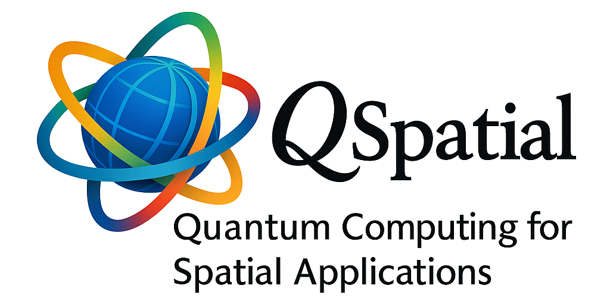

1st ACM SIGSPATIAL International Workshop on Quantum Computing and Quantum-Inspired Technologies for Spatial Data Systems and Applications
(Q-Spatial 2025)
Co-located with the 33rd ACM SIGSPATIAL 2025 in Minneapolis, Minnesota, USA
Monday, November 3, 2025
Co-located with
 Corporate SponsorsImportant Dates
|
Welcome to Q-Spatial 2025The 1st ACM SIGSPATIAL International Workshop on Quantum Computing and Quantum-Inspired Technologies for Spatial Data Systems and Applications Keynote Speaker
Workshop OverviewQuantum computing and other quantum-driven technologies have been a field of technology investment for decades. With promising potential, significant investments from many governmental and industrial parties are poured into winning the race. The SIGSPATIAL community is building a capacity in that promising technology field. This workshop aims to bring together SIGSPATIAL community members interested in exploring quantum technologies in spatial systems and applications. It will also invite non-SIGSPATIAL members who are experts in the field of quantum technologies to enrich the community and foster learning and collaboration. The workshop will be open to all levels of expertise, allowing participants to contribute or learn. Workshop Mission and GoalsThe high-level philosophy of organizing this workshop is engaging, motivating, encouraging, and helping interested SIGSPATIAL community members to explore spatial problems that could take advantage of quantum computing. This mission breaks down into the following goals:
The International Year of Quantum 2025On June 7, 2024, the United Nations General Assembly officially declared 2025 "The International Year of Quantum Science and Technology". Organizing this workshop will be part of the global community efforts to raise awareness about quantum computing technologies and their impact in the context of spatial data. Check https://quantum2025.org/ for more details and events. Updates
Workshop Organizers
Workshop ProgramThe detailed workshop program will be added soon. The program is designed to provide both introductory material for newcomers and advanced content for experienced researchers. It will consist of:
Call for ParticipationTo be added Registration for the Q-Spatial 2025 workshop will be handled through the main conference registration system. How to RegisterPlease visit the ACM SIGSPATIAL 2025 Conference Website for details on registration fees and procedures. |